The project is aim to monitoring the condition and the environmental of the plant. By using the different types of sensor, the data will be collect and it will be visualized on the screen.
The inspiration of this project comes from the plants I take care of, and I often curious what their worlds is like.
Inspiration
I am trying using the potentiometer to detect the direction of the wind , vibration sensor to detect the strength of the wind, and also the rain sensor to monitor the amount of water on the plant.
Envision
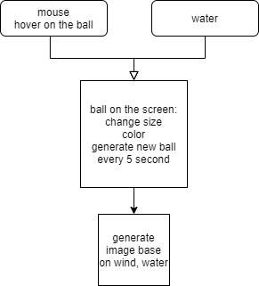
Digram
Controller
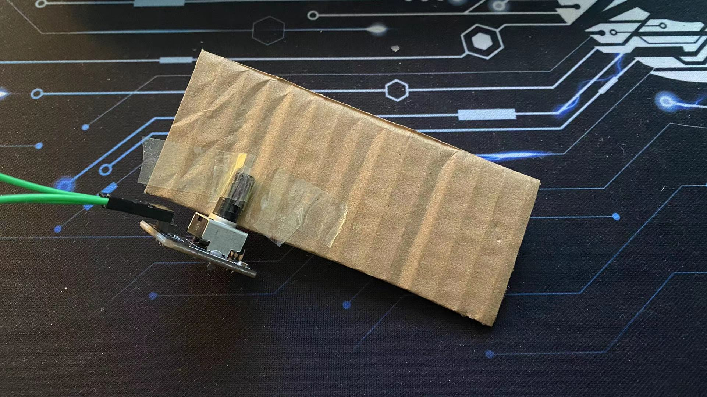
I use potentiometer to detect the direction of the wind, the way I doing that is to glue one piece of cardboard to the potentiometer, so the wind can drive the potentiometer to rotate
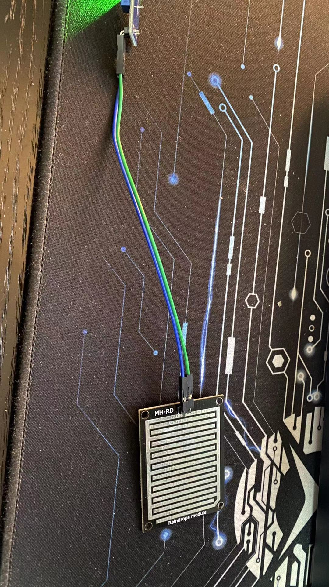
Using the raindrop sensor to show the amount of the water
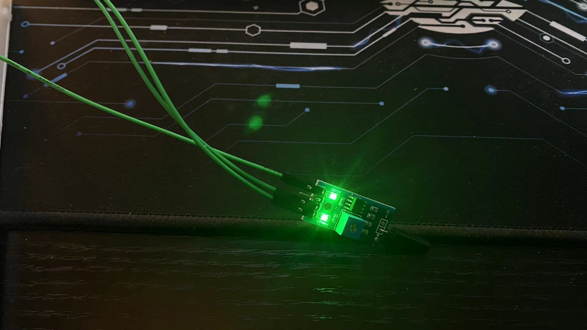
By putting the vibration sensor on the branch of the plant, I can have some idea of how strong the wind is
Image
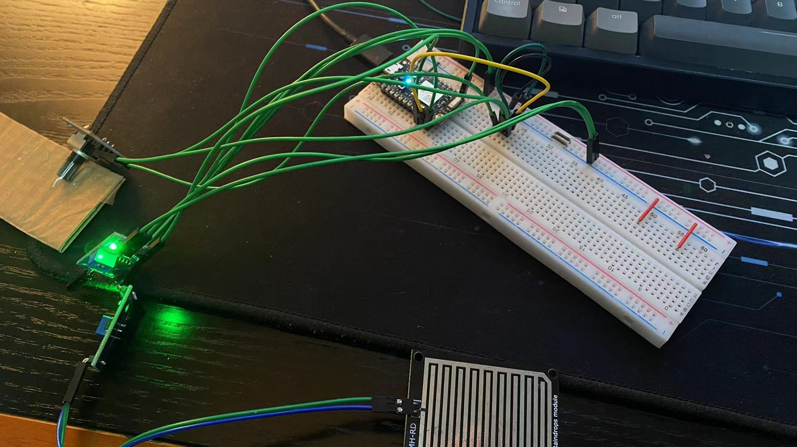
Video
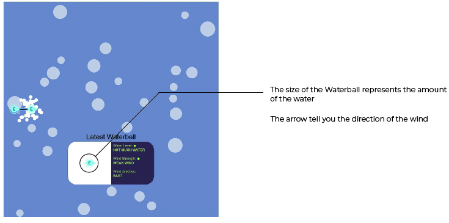
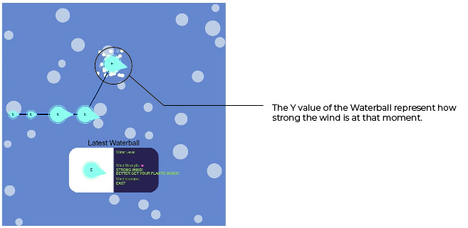
How it worked
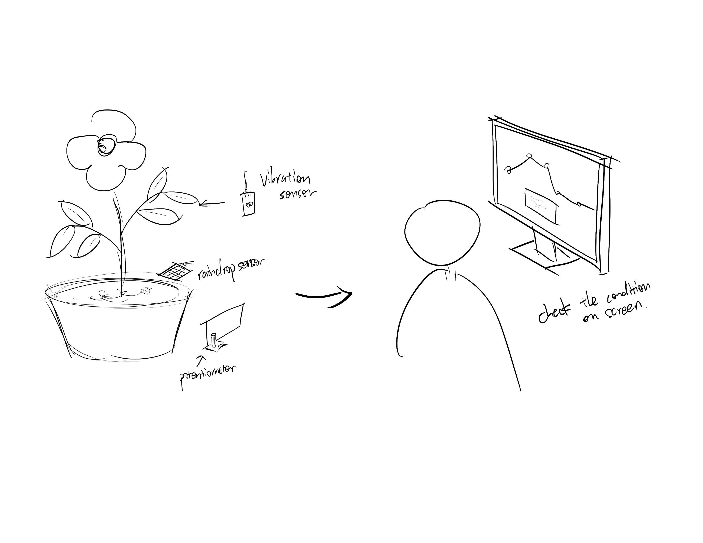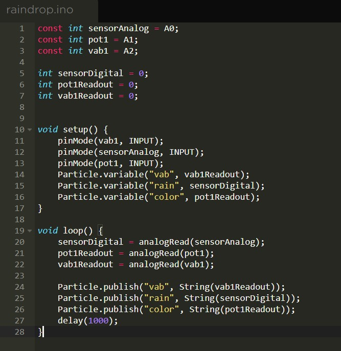
To get the data for sensor and send it to the website
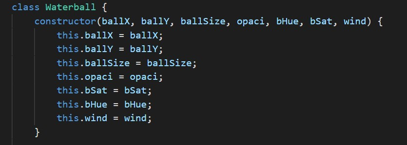
I created the class called Waterball so that I can generate an array of the Waterballs
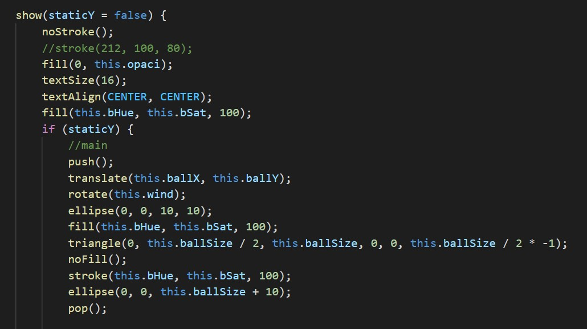
To rotate the arrow
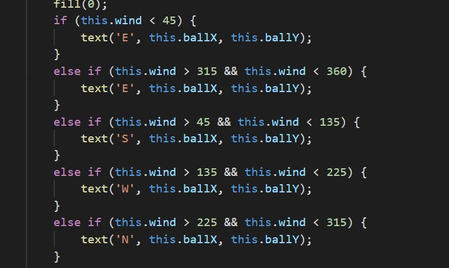
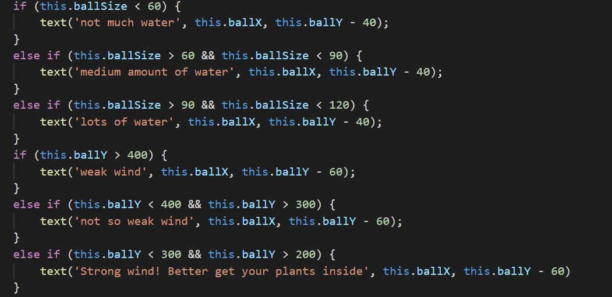
Future
Add more sensors to it, like the light sensor, temperature sensor or something like soil moisture sensor.
User can have more control for the "timeline", so the user will able to zoom in and out instead of scroll the page.
Add the date system, so the info can be stored, and user can review it whenever they want.